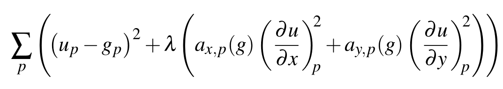
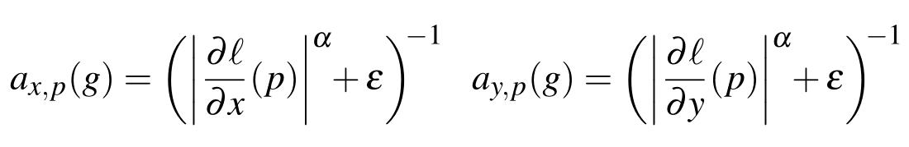
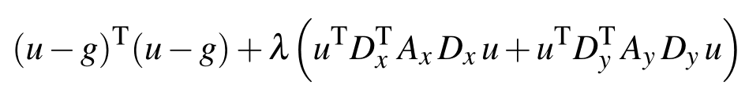

WLS 滤波的公式理解
原文：
- Edge-Preserving Decompositions for Multi-Scale Tone and Detail Manipulation
- SIGGRAPH 2007, Zeev Farbman, The Hebrew University
原文的目的是为了高动态范围图像更好的显示，但是无心插柳，其提出的 WLS 滤波有着更大的影响力，和双边、引导共同称为三大保边滤波器。
原理非常简单，但是原文中有一些太过简单，看的一头雾水，网上资料也不多，后来终于找到一篇文章（见参考链接），醍醐灌顶。现在写一下我的理解，可能有很多错误，欢迎大家讨论。
公式一
首先作者提出了目的，公式如下：

其中 u 是目标图，g 是原始图。a 是我们自己要给的参数，用来控制平滑程度。这个式子如何理解呢？前半段好理解，就是让目标和原始还是尽可能接近，后半段的意思是我们希望得到的目标能够比较好的保持边缘，而达到这一目的就是通过 a 来实现，这个请看下面的话（以横向为例子）：
忽略 \(\lambda\)，现在假如某一点处横向的微分较大，说明这一点在横向中是边缘，后一项会有绝对支配权，那这样得出来的 u 就不管 \((u-g)^2\)，而是尽可能让后一项小，这样就完全糊掉了，所以这时我们要 ax 在这一点的值设置的小，这样推测 u 时也会看前一项，不会让他糊。
忽略 \(\lambda\)，现在假如某一点处横向的微分较小，说明这一点在横向中是光滑，前一项会有绝对支配权，那这样得出来的 u 尽可能 \((u-g)^2\)，这样相当于等于原图，此时我们可以放心大胆的让 a 大一些，反正差别不大。
其实现在再来看， a 果然起到了控制平滑程度的效果，a 越大那么就越考虑后面的项，那么越平滑。而且 a 不是常数，我们可以让边缘和光滑的地方中 a 的值不一样，光滑的时候 a 大一些，边缘的时候 a 小一些。
那么 a 这么重要，取什么值？作者直接用了一篇数学相关的论文，给出了下面的公式：

参数的解释我就偷懒直接把原文 copy 过来，很好理解，其中：\(L\) is the log-luminance channel of the input image g, the exponent \(\alpha\) (typically between 1.2 and 2.0) determines the sensitivity to the gradients of g, while \(\epsilon\) is a small constant.
符合之前的设计：边缘 a 小，光滑 a 大。所以其实最开始我说的 a 是我们自己要给的参数，实际上是我们要调节 \(\alpha\) 的大小，以此来生成 a。
公式二
现在最小化上面的公式，先转换为矩阵形式，看转成的结果：

重头戏来了！我当时卡在这里好久
u 和 g
u 和 g 不是矩阵，是向量，一定要记住！！它们是图像每一列摞起来的向量，也就是假如图像大小为 \(m*n\)，那么 ：
D
\(D\) 叫做微分算子的矩阵形式（论文里叫做 discrete differentitaion operators），下面给出 \(D_x\) 和 \(D_y\) 的格式：
解释下 \(D_y\)：假设图像大小是 \(m*n\)，则 \(D_y\) 的第 \(m-1, 2m-1, ..\) 行全是0，其余的行都是有两个位置分别为 -1 和 1。
现在我们来分析 \(D_y * u\)，要记住哈，\(u\) 不是图像矩阵，而是图像每一列摞起来的值。令 $Y = D_y u $，那么 \(Y\) 是一个 \(m*n\) 大小的向量。对于 \(Y[i*m+j]\) 而言，如果 j 不为 \(m-1\)，那么：
现在看看，这个是不是就是图像关于纵轴的微分。另外为什么说 j 不为 \(m-1\) 呢，因为这个特殊情况相当于是图像中的最下边一行，这个本来就不应该做纵轴的微分，因此这也是为什么 \(D_y\) 的第 \(m-1, 2m-1, ..\) 都是 0，这就是属于边界的特殊情况考虑了，没什么高大上的。
那么 \(D_x\) 同理，还是先解释一下上面的矩阵形式，前面有值的行中，-1 和 1 中间都是有 \(m\) 个 0，而从倒数第 \(m\) 行开始到最后一行，每一行都是 0，这个对应的是最右边一列不应该有横轴微分。可以手动算一下，\(D_xu\) 最后就是图像关于横轴的微分。
A
这里的 A 是一个对角矩阵，就是由公式一最后计算出的 a 所得。这个很好理解，毕竟我们是要将 \(a_x * (\nabla_x u)\) 转成了 \((D_xu)^T A (D_xu)\) 的形式，就是线性代数中的二次型那边的知识，能够推演出 A 是由所有 a 组成的对角矩阵。
公式三
公式二是将公式一转成了矩阵形式，但别忘了我们的目的，最小化公式一或者叫最小化公式二。通过导数为 0（这个需要自己算，我也没推，也不是很复杂。但估计是一个很经典的问题，希望有人能告诉我这叫什么问题），可得其解满足方程：
然后就可以计算了，求出 \(L_g\)，然后就能求出 \(u\)。
以上就是我对 WLS 滤波的理解，代码就不贴了，这么经典的方法网上已经有代码了，很好找，比如参考链接中给出了 Matlab 代码。
参考链接
https://www.blog.csdn.net/u014230360/article/details/107639764